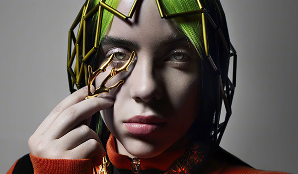
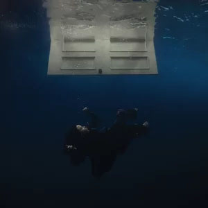

° Inicio °
Billie Eilish Pirate Baird O'Connell (sí, lo leíste bien, Pirate), es una cantante y compositora. Talento, creatividad y ciertos tintes de rebeldía, engloban a una exitosa cantante que se refiere a sí misma como una adolescente más en busca de descubrir el mundo en el que vivimos.
Con una estética inconfundible y un sonido que redefine los límites de la música contemporánea, Billie no es solo una artista; es un fenómeno cultural. Aquí descubrirás una visión íntima y envolvente de su creatividad, su estilo inigualable y la esencia que la convierte en una voz inconfundible de nuestra generación. Prepárate para explorar las múltiples facetas de su arte, desde sus cautivadoras melodías hasta su impacto en la cultura pop. ¡Adéntrate y déjate llevar por la magia de Billie Eilish!
° Biografía °
Billie Eilish Pirate Baird O'Connell ( 18 de diciembre de 2001, Los Angeles) es una cantante pop norteamericana. Suele componer en colaboración con su hermano Finneas, que es también el productor de muchas de sus canciones y la acompaña en sus actuaciones. Se la considera uno de los fenómenos musicales de mayor impacto de los últimos años.
Los padres de Billie, Maggie Baird y Patrick O'Connell, eran músicos y actores, y trabajaban en la industria del cine de Hollywood. Sus progenitores no creían en la educación reglada, y educaron a Billie y Finneas en casa. La alentaron desde su infancia, tanto a ella como a su hermano, a expresarse de forma artística, mediante clases de música, composición y actuación. Se crió en el vecindario de Highland Park. A los ocho años se unió al Coro de Niños de L.A. y participó en varias audiciones de talentos infantiles.
Billie escribió su primero canción a los once años, inspirada en la serie The Walking Dead. Su ídolo, por aquel entonces, era Justin Bieber.
A los catorce años firmó un contrato con la discográfica Interscope Records. En 2015, lanzó a través de SoundClound su canción Ocean Eyes. La peculiar estética neogótica de la joven, sus letras fatalistas, su sonido electrónica y minimalista, y su voz ronca y susurrante no tardaron en llamar la atención. Otra de sus canciones, Bored, fue elegida para la banda sonora de la exitosa serie de Netflix Por trece razones. Su álbum debut When We All Fall Asleep, Where Do We Go? se convirtió en un éxito abrumador, alcanzando el número 1 tanto en Estados Unidos como en el Reino Unido en 2019. La mayor parte del contenido del álbum se había grabado y producido en el propio hogar Billie y Finneas.

° Premios °
Billie Eilish es una artista cuyo impacto en la música moderna es indiscutible. Con una voz única y una creatividad sin límites, ha acumulado una impresionante cantidad de premios en una corta pero brillante carrera. Hasta la fecha, Billie ha sido galardonada con más de 70 premios, incluyendo prestigiosos reconocimientos como el Academy Award por Mejor Canción Original, varios American Music Awards, múltiples Grammy Awards, y numerosos premios de MTV. Su éxito no solo se mide en números, sino en la manera en que ha inspirado a millones de jóvenes a ser auténticos y a seguir sus sueños sin importar los obstáculos. Cada logro de Billie Eilish es un testimonio de su talento inigualable y su capacidad para conectar profundamente con su audiencia, consolidándose como una de las artistas más influyentes de nuestra generación.
° Discografía °
La carrera musical de la multipremiada cantante es tan corta como destacada. Solo cuenta con un álbum discográfico, el ya mencionado y sumamente galardonado When We All Fall Asleep, Where Do We Go?, lanzado en 2019. Después de una larga espera en donde la Billie Eilish nos deleitó con varios sencillos (también galardonados), el 30 de julio 2021, fue el ansiado regreso de la californiana en este formato con el lanzamiento de Happier Than Ever, un álbum que es integrado por sus sencillos My Future, Therefore I Am, y Your Power.
When we all fall asleep, where do we...(2020)
Happier Than Ever(2021)
Don't smile at me(2017)

What Was I Made For? [From the Motion Picture...(2023)
Bored(2017)
